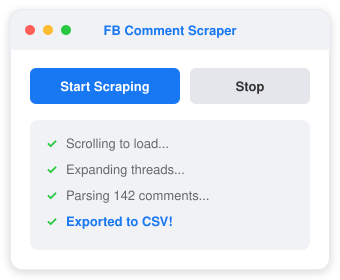
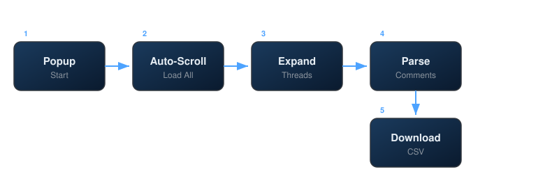

Chrome Extension to scrape Facebook post comments and export to CSV.
No dependencies. No accounts. Just one click.
Automatically scrolls the entire page to load all comments, even on long threads.
Clicks "View more comments", "See more", and expands all reply threads.
Extracts author name, comment text, and timestamp from Facebook's DOM.
One-click download as fb_comments.csv with Author, Comment, Date columns.
Works on both desktop and mobile Facebook views for maximum compatibility.

Author,Comment,Date
"John Doe","Great post!","2d"
"Jane Smith","Thanks for sharing","1w"
"Bob Wilson","Very helpful, bookmarked!","3d"
git clone https://github.com/dan-tech-academy/fb-comments-export-extensions.gitGo to chrome://extensions → Enable Developer mode → Click Load unpacked → Select the cloned folder.
Open any Facebook post → Resize window to narrow width → Click the extension icon → Hit Start Scraping.
Pro tip: Narrow window triggers Facebook's mobile layout, making scraping faster and more precise.